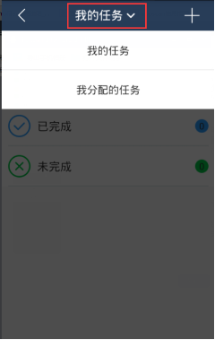
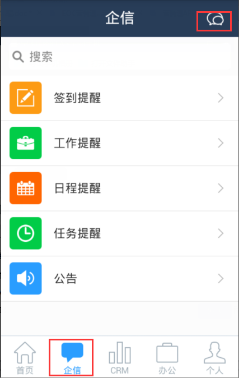
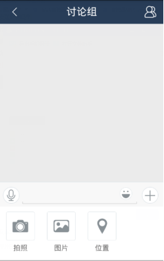

办公管理
-
1、如何查看别人分配给我及我分配给他人的任务？
-
答：进入“办公-任务”，点击界面顶部标题，可选择查看我的任务已经我分配的任务。

-
2、公司或部门的知识库的文档我收藏之后可以在哪里查看？
-
答：文档被收藏后，会同步至我的知识库下，但如果文档被删除后，则我的知识库中也同步删除。
-
3、我没有后台管理的菜单权限，但是我又想看到其他同事的联系方式，可以看到吗？
-
答：可以的，进入“办公-通讯录”在，会显示企业中的所有可正常登录系统的人员信息，这个不受权限控制。
-
4、公告中的部门是指只有这个部门下的人员才可以看到这个公告吗？
-
答：不是的，这个部门只是记录这个公告是哪个部门发的，一个显示作用，不涉及查看权限控制。
-
5、手机端可以发送公告吗？
-
答：手机端暂时没有发布公告功能。相关人员在营销通网页端发布公告后，手机端可查看。
-
6、如何创建群聊？
-
答：进入消息模块，点击界面右上角的群聊图标，即可选择需要群聊的同事。群聊时可发送图片、当前位置、视频、文件等。

